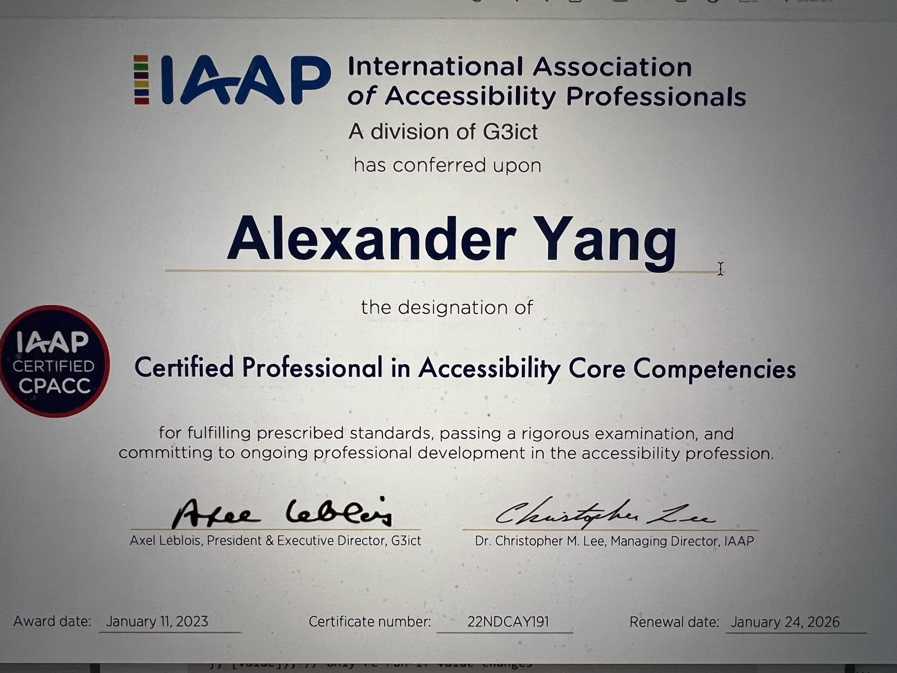

How I Passed CPACC Exam
Personal Blog by Alexander G. Yang
February 16'2023
It has been 3 years since I wrote my last blog. I have decided to write another one. As a frontend engineer, it's a must to be knowledgeable and proficient at web accessibility. Since my manager said company is willing to compensate me for writing exam, I said why not? I have passed numerous cloud exams after all. Last month I got a news that I passed CPACC exam 🎉 I have taken two courses to prepare for the exam: famous Deque prep and Princeton University course. They were both paid by my employer, Ceridian. Condition was that I need to pass the exam to get refunded. Expensive exam fee was refunded as well. Due to this expense, I was under a lot of pressure when preparing for the exam. Brainscape flashcards helped to refresh my memory. I paid for one month. I never wrote my own note. I'm too lazy for that 😝 What differentiate Princeton University course from Deque is that they provide practice exam. I'm a big fan of doing multiple practice exams before actual exam. It's the best way to confirm your knowledge. However, actual exam was more difficult, but it does help to study prep courses from both providers. I studied about 2 months. I thought exam can't be too hard since it's multiple choices. I'm used to multiple choices exams from AWS and Azure. Studying consistently is the key to success.
Finally, when the exam date arrived, I drove to the exam center and luckily it wasn't much of a hassle. I decided to write the exam at exam center because I heard so many horror stories of writing exam at home virtually. The exam center was less than impressive. Building looked 100 years old... very shabby. Anyway, I proceeded to enter the building. I was on a mission. While writing exam, I had to endure the heating blowing right in my face. I wrote it in November in Toronto so weather was quite cold. I could feel my eyeballs drying out. Exam itself was more challenging than I expected. International laws and regulations weren't tough part. It was where they describe certain disability and making correct guess on which disability was the tricky part. After completing the exam, I thought it was going to be close call.
After waiting for 2 months 😫, I finally got the news that I passed the exam! Little surprised, but I'll take the result. I'm not sure if I will take WAS exam or not, which will qualify me to become a CPWA. For now I'll keep on practicing creating accessible components.